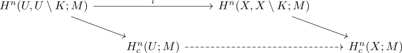
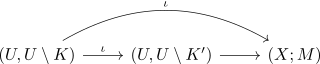

map induced by a open subspace inclusion for the locally finite homology
Proposition
Let $X$ be a topological space, $U \subseteq X$ an open subspace. Then there exists a natural map
\begin{align*}
\iota_{#}: H_c^n(U;M) \cong H_c^n(X;M)
\end{align*}
induced by universal property and the maps

given by relative excision theorem
see:
Proof
induced map
Note that the diagram

for $K \supseteq K'$ commutes as it is given by the inclusion